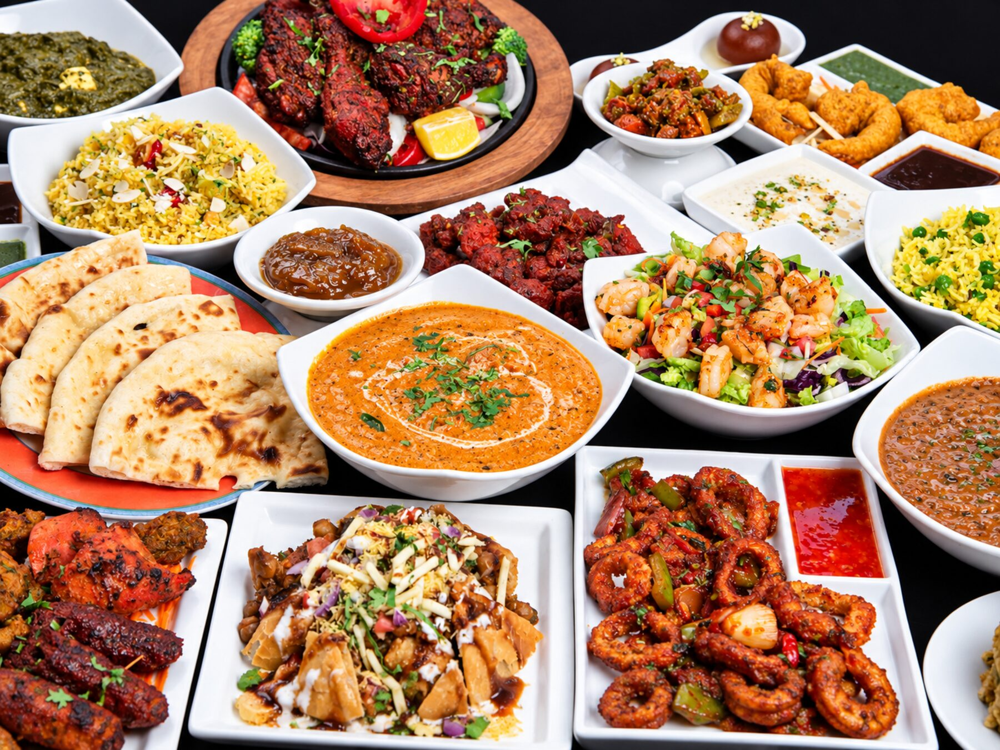

Palak Paneer
Palak paneer is our most popular vegetarian main: cubes of fresh house-made cheese in a creamy, gently spiced spinach gravy. It is $18.99 at 106 Market St in Kentlands, and one of many vegetarian dishes on the menu.

We cook the spinach down with garlic, ginger and green chili, then blend it smooth and finish it with cream so it stays bright rather than muddy. The paneer is soft and fresh, not rubbery.
It is vegetarian, filling and mild, and it is a staple of our catering trays and lunch buffet.
Scoop with garlic naan or spoon over rice. Pairs well with a chicken curry for a mixed table.
Goes well with
Good to know
Palak Paneer — questions
Is palak paneer vegetarian?
Yes. Palak paneer is fully vegetarian — spinach and fresh house-made cheese. We have a full section of vegetarian mains.
Is palak paneer vegan?
No — it contains paneer cheese and cream. For a vegan spinach or chickpea dish, try chana masala, yellow daal or baingan bharta, which can be made without dairy on request.